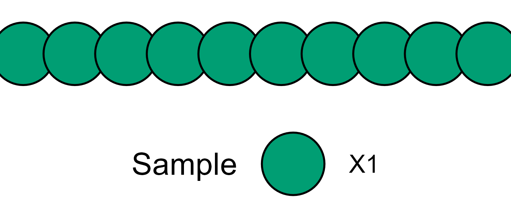
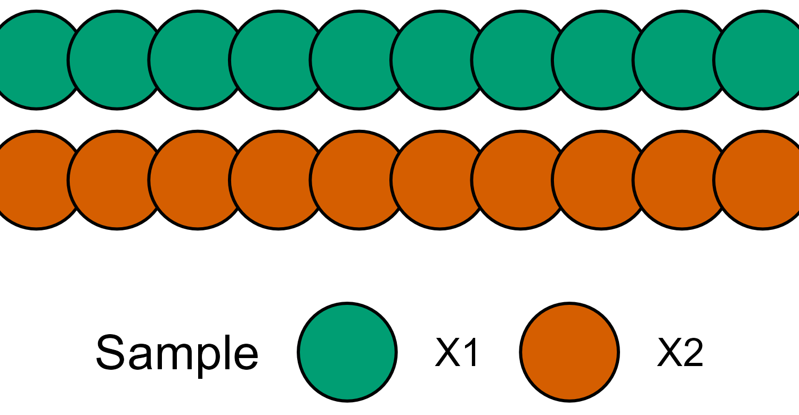
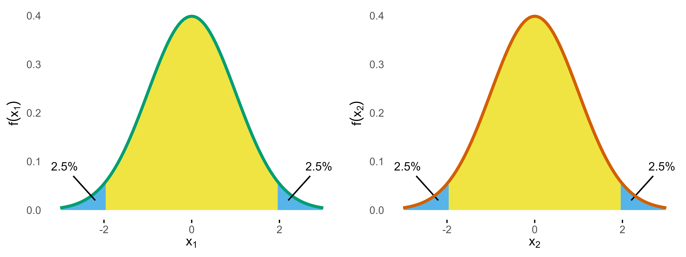
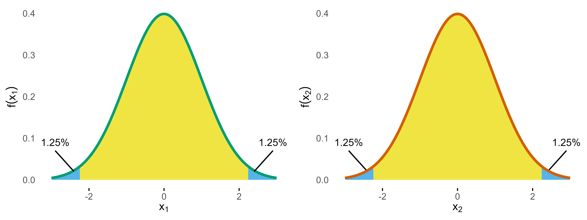
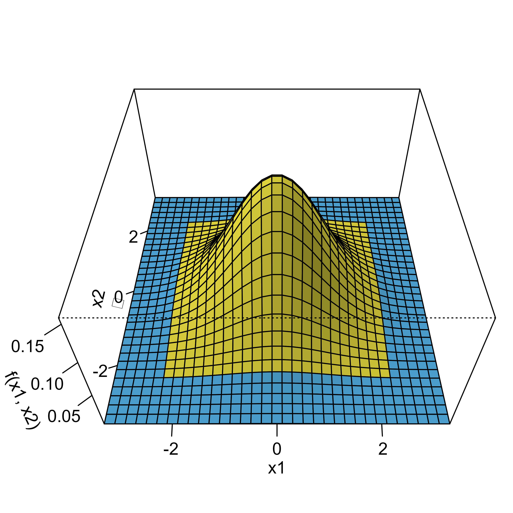
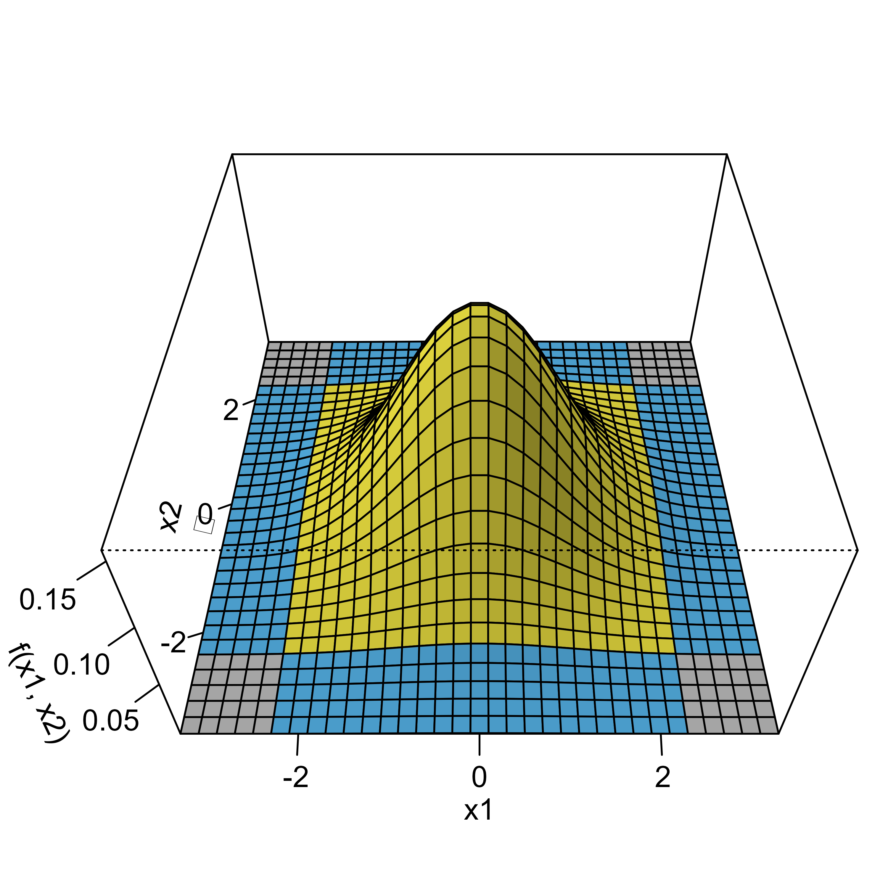
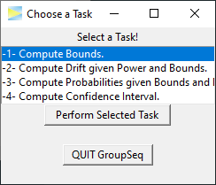

While calculating probabilities of group sequential designs can be considered somewhat complex, it may be less difficult than most people think. This vignette provides a visual explanation of the underlying method to help forming an intuitive understanding of this topic. The author is convinced that gaining an intuitive understanding of these calculations helps when applying and interpreting such designs in practice.
Following the easy-to-hard principle, we start with conventional non-sequential study designs and gradually progress to the group sequential case.
Consider you have a sample of data, let’s call it X1.

Next you calculate a standardized test statistic. Assuming a standard normal distribution, the density distribution under the null hypothesis forms the well-known bell-shaped curve.
Standard Normal Density with critial bounds marking 5% significance level.
If a two-sided test is planned with a significance level of \(\alpha = 5\%\), the critical bounds are set as visualized in the above figure. In the days before computers these bounds had to be looked up in tables in some book, but these days of course you just plug-in the numbers in your favorite statistics program. In R its
qnorm(0.025)
# [1] -1.959963985Now what do these bounds mean? Basically, if the null hypothesis (\(H_0\)) was true, the probability of obtaining a test statistic at or beyond these bounds is \(2\cdot 0.025 = 0.05\), which therefore limits the so-called type I error (rejecting \(H_0\) although its true) at 5%.
Going forward the key thing to notice is that calculating this probability basically means calculating the (blue) area under the density curve (see above figure). Again, these days it’s easy to derive the area using computer’s numerical integration.
Now lets consider another sample X2 that was collected independently from X1.

If we construct a distribution similar to the one above, we have the following.

A statistical test on both samples now would control the type I error for each of these studies at the 5% level, but, of course, things are more complicated if you consider both samples at the same time, because now you have two chances of conducting the error.
So if we assume our samples X1 and X2 were sampled from the same population and we are interested to test the same outcome, to control the overall type I error at 5% we need to down-adjust alpha. The simplest and most common approach is to use the Bonferroni correction, which means we are allowed to spend \(\alpha_B = \alpha/2 = 0.025\). The corresponding critical bound is
qnorm(0.025/2)
# [1] -2.241402728and we have

So if we calculate the overall type I error probability, we sum up all the areas and get \(p = 1.25\% + 1.25\%+ 1.25\% + 1.25\% = 5\%\). So we are good, are we? Well, the devil is in the details.
Remember, the goal was to make sure that we don’t conduct a type I error. The probability to conduct no type I at either X1 or X2 is \(1-\alpha_B = 1-0.025 = 0.975\).
From this it follows that the probability to conduct no error at both X1 and X2 is \((1-\alpha_B)^2 = 0.950625\).
Now we can calculate the complementary probability of conducting at least one type I error* as \(1 - (1-\alpha_B)^2 = 0.049375 = 4.9\%\). Wait, why is this not 5%? The reason is that we don’t care if one or both studies produce a type I error, as one error is already enough for the overall setup to fail. For this reason the Bonferroni correction is not optimal, as it “wastes” 0.1% of alpha.
Of course, this is well-known and a precise alpha adjustment can be derived via the so-called Sidak correction: \(\alpha_S* = 1 - (1-\alpha)^{1/2} = 0.02532057 > \alpha_B\).
Plugging this into the above formula, we get \(1 - (1-\alpha_S)^2 = 0.05 = 5\%\). If you are interested, you can find the derivation of Sidak’s formula under the link, but I have promised you to provide intuitive explanations, so let’s move to the key concept that will help to understand group sequential probabilities.
Remember that determining the probability of distributions is all about calculating areas under the curve. Fortunately, two normal distributions can be combined into a bivariate normal distribution, which then looks like this.

Now to derive the overall type I error, we again just have to compute the area under the blue grid. To do this, we are using the mvtnorm. To keep matters simple, we just discuss the results. For further details you can see the source code of this vignette.
Now if we plug in the Bonferoni bounds, the calculation of the blue area, results in p = 0.049375 while the Sidak bounds yield p = 0.05, which therefore confirms the above results.
However, we now also have a graphical intuitive interpretation to explain the results. For this, have a look at the next graph.

The grey areas mark those scenarios where both type I errors fall together. The intuitive explanation now goes like this: when calculating the overall area, the grey areas are only counted once whereas in the Bonferroni case you count them twice. To see this, we can calculate the area of one of these edges, which results in p = 0.00016 and if we subtract them from the overall alpha we get \(0.05 - 4\cdot 0.00016 = 0.04936\), which corresponds to the overall probability under Bonferroni correction.
So when using the bivariate normal distribution, we naturally derive at the optimal solution for the alpha adjustment. The same is true for group sequential designs, which further optimize the calculation by taking into account the dependency of the staged samples.
Load the library to start the graphical user interface.

Now the application splits into four possible tasks.
To select a task, you have to hit the Perform Selected Task button.